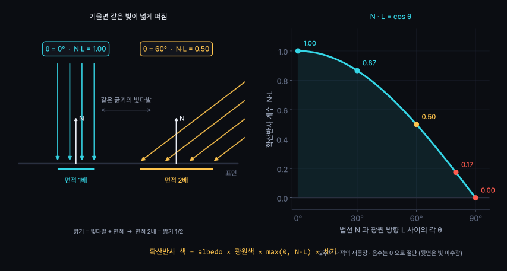
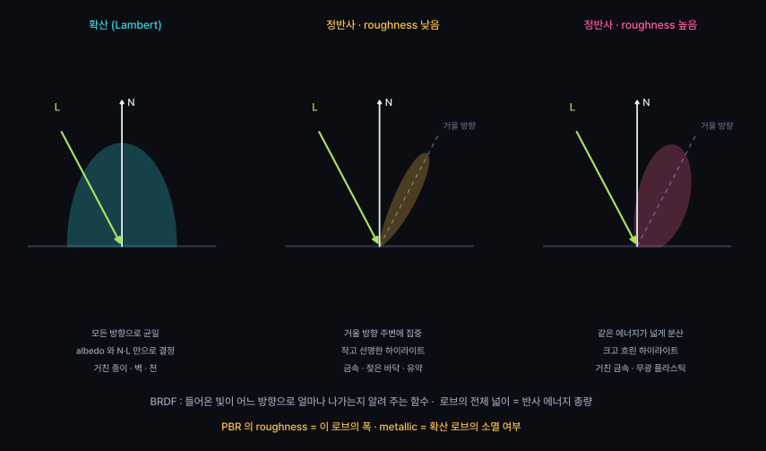
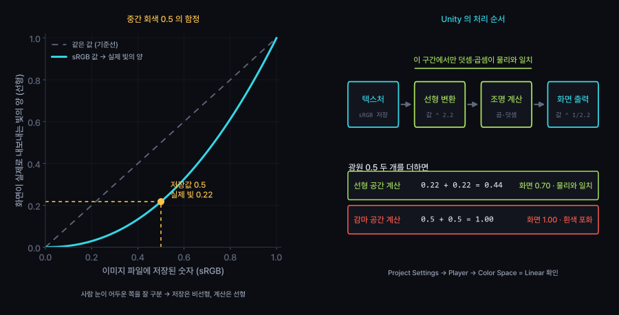
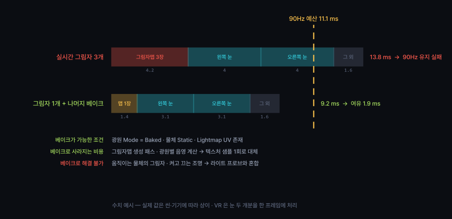
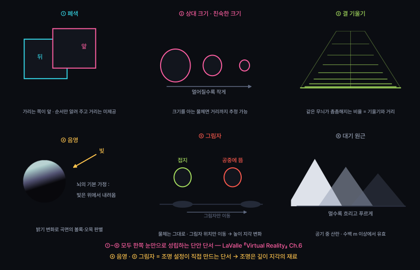

라이팅 모델, PBR 머티리얼과 라이트매핑
화면 색 = 빛 · 표면 방향 · 재질 세 값의 곱 — 계산 과정 추적
실시간 그림자 남발과 색공간 설정 혼동 진단
조명 = 장식 이상의 요소 · 거리 지각의 재료
광원 · 표면 법선 · 재질 계수 → 한 번의 곱셈과 덧셈
4주차 : 정점이 화면 어느 자리에 찍히는지 결정
5주차 : 그 자리에 어떤 색이 찍히는지 결정
프래그먼트 셰이더가 픽셀마다 수행하는 계산
입력 세 가지 : 빛 · 표면 방향 · 재질
1920×1080 한 화면 = 약 200만 회 · VR 은 두 눈분
| 종류 | 방향 | 감쇠 | 실시간 그림자 비용 | 용도 |
|---|---|---|---|---|
| Directional | 전체 동일 | 없음 | 캐스케이드 2~4장 | 태양 · 달 |
| Point | 사방 | 거리에 따라 | 큐브맵 6면 | 전구 · 촛불 |
| Spot | 원뿔 안 | 거리 + 각도 | 맵 1장 | 손전등 · 무대 |
| Area | 면 전체 | 거리에 따라 | 베이크 전용 | 창문 · 형광등 |
점광원 하나 = 그림자맵 여섯 장 · 실시간 점광원 그림자가 비싼 이유
구면으로 퍼지는 빛 : 같은 에너지가 4πd² 넓이에 분배
Unity 의 Range 값 : 계산 생략 거리 · 물리 감쇠와 별개
Directional 광원에 감쇠가 없는 이유 : 광원이 무한히 멀다는 가정
| Source | 결과 |
|---|---|
| Skybox | 하늘 색이 그늘에 반영 |
| Gradient | 하늘·수평·바닥 3색 지정 |
| Color | 단색 · 가장 단순 |
Lighting 창 → Environment
환경광 = 간접광의 가장 거친 근사
값 0 → 그늘이 완전한 검정 · 형태 판독 불가
실외 그늘이 푸른 이유 : 하늘 전체가 광원 역할

// 표면 법선 N, 광원 방향 L (둘 다 정규화)
float ndotl = max(0.0, dot(N, L)); // ← 2주차 내적
float3 diffuse = albedo * lightColor * ndotl * intensity;
| 각도 | N·L | 밝기 |
|---|---|---|
| 정면 0° | 1.00 | 최대 |
| 60° | 0.50 | 절반 |
| 90° 이상 | 음수 → 0 | 빛 미수광 |
확산반사의 특징 : 보는 방향과 무관 · 카메라를 돌려도 밝기 동일
면의 법선 = 세 정점의 외적 (2주차)
정점 법선 : 인접 면 법선의 평균 → 부드러운 음영
법선은 방향 벡터 (w = 0)
이동 변환 적용 시 조명 붕괴 — 2주차 MultiplyVector
비균등 스케일 적용 시 법선 재계산 필요
(역전치 행렬) · 엔진이 자동 처리
넓고 흐린 하이라이트 · 무광 표면
좁고 선명한 하이라이트 · 광택 표면
확산반사와의 차이 : 카메라 위치 V 가 식에 포함
고개를 돌리면 하이라이트 이동 → VR 에서 재질감의 주된 단서
| 항 | 담당 | 빠졌을 때 |
|---|---|---|
| 환경광 | 간접광 근사 | 그늘이 완전한 검정 |
| 확산반사 | 물체의 형태 | 면 구분 소멸 |
| 정반사 | 재질감 · 광택 | 전부 종이처럼 보임 |
적분 기호의 의미 : 반구 전체 방향에서 들어오는 빛을 모두 더함
실시간 렌더링 = 이 적분의 근사 과정
Lambert · Blinn-Phong · PBR 의 차이 : 가운데 f 를 무엇으로 두는가

| 이름 | 범위 | 의미 | 잘못 썼을 때 |
|---|---|---|---|
| Albedo | 색 | 확산반사 색 | 조명과 무관하게 떠 보임 |
| Metallic | 0 또는 1 | 금속 여부 | 중간값 남용 → 재질 불명 |
| Smoothness | 0 ~ 1 | 표면 매끈함 | 전부 플라스틱 질감 |
| Normal map | 탄젠트 공간 | 법선 교란 | 6주차에서 상세 |
| Occlusion | 0 ~ 1 | 틈새 그늘 | 입체감 저하 |
금속의 특징 : 확산반사 거의 0 · albedo 가 반사색 역할
비금속 : 확산반사 존재 · 정반사는 무채색
PBR 의 전제 : 물리 범위 안의 값 입력
범위를 벗어난 값 → 조명을 바꿀 때마다 결과 예측 불가

| Gamma | Linear | |
|---|---|---|
| 조명 덧셈 | 과장 | 물리와 일치 |
| 밝은 부분 | 흰색 포화 | 계조 유지 |
| 그늘 | 검게 뭉침 | 단계 유지 |
| PBR | 기준 붕괴 | 정상 |
확인 위치 : Project Settings → Player → Color Space
URP 템플릿 기본값 Linear · 구형 프로젝트는 Gamma 유지 가능
학기 중간에 전환 시 모든 머티리얼의 밝기 재조정 필요
→ 프로젝트 시작 시점에 결정
| 텍스처 | sRGB 체크 | 담는 내용 |
|---|---|---|
| Albedo · Emission | 켬 | 사람이 보는 색 |
| Normal map | 끔 | 방향 데이터 |
| Metallic · Smoothness | 끔 | 재질 수치 |
| Occlusion · Mask | 끔 | 가림 비율 |
판단 기준 : 사람이 보는 색인가, 계산용 숫자인가
숫자 맵에 sRGB 적용 → 값이 변형된 채 계산 → 재질이 미묘하게 어긋남
광원 → 표면 → 눈
위에서 계산한 Lambert · 정반사 항
광원 → 빨간 벽 → 흰 바닥 → 눈
바닥이 붉게 물드는 현상 (color bleeding)
실내 밝기의 대부분이 간접광 · 직접광만 계산 시 무대 조명 같은 인상
간접광 계산은 비싸므로 미리 구워 두는 방식 사용

| 요소 | 대상 | 저장 형태 | 한계 |
|---|---|---|---|
| 라이트맵 | 움직이지 않는 물체 | 텍스처 | 물체 이동 시 어긋남 |
| 라이트 프로브 | 움직이는 물체 | 공간 격자 샘플 | 그림자 미포함 |
| 반사 프로브 | 광택 표면 | 큐브맵 | 갱신 비용 |
베이크 전제 조건 : 광원 Mode = Baked · 물체 Static 표시 · Lightmap UV 생성
셋 중 하나만 빠져도 결과 미반영
실시간 그림자 남발 · 색공간 설정 혼동
두 증상의 공통점 : 코드 오류 없음 · 설정 값만의 문제
컴파일 오류·경고 미발생
그림자 쪽
shadows = Soft 기본값색공간 쪽
AI 가 이 설정을 유지하는 이유 : «보기 좋은» 기본값
성능·색 정확도는 요구에 포함되지 않으면 미고려
| 확인 대상 | 도구 | 판정 기준 |
|---|---|---|
| 그림자 광원 수 | Light 컴포넌트 일괄 확인 | VR 기준 0~1개 |
| 그림자 패스 | Frame Debugger | Shadows.Draw 항목 수 |
| 색공간 | Project Settings | Linear 여부 |
| 텍스처 설정 | Inspector | albedo = sRGB 체크 · 데이터맵 = 해제 |
| 프레임타임 | OVR Metrics Tool | 온디바이스 11.1ms 이내 |
에디터 수치로 판정 불가 · 헤드셋 실측 기준
판단 기준 : 움직이는 그림자가 경험에 필요한가
필요 없는 그림자 → 베이크 대상
깊이 지각과 공간 인식 · LaValle 『Virtual Reality』 Ch.6
| 항목 | 사람 | Quest 3 | 결과 |
|---|---|---|---|
| 수평 시야 | 양안 약 200° | 약 110° | 주변시 자극 축소 |
| 양안 겹침 | 약 120° | 약 95° | 입체 영역 축소 |
| 최고 해상도 | 중심와 약 2° | 화면 전체 균일 | 6주차 PPD 주제 |
| 초점 조절 | 거리에 따라 변화 | 화면 거리에 고정 | 10주차 공간 UI |
HMD 가 제공하지 못하는 단서 존재 → 나머지 단서로 보충 필요
조명이 담당하는 단서가 그 보충분의 큰 부분
| 분류 | 단서 | 유효 거리 | VR 에서의 공급원 |
|---|---|---|---|
| 단안 · 정적 | 폐색 · 상대 크기 · 결 기울기 · 음영 · 그림자 · 대기 원근 | 전 범위 | 렌더링 결과 자체 |
| 단안 · 운동 | 운동 시차 | 중거리까지 | 머리 트래킹 |
| 양안 | 양안 시차 · 수렴 | 약 10 m 이내 | 두 눈 렌더링 |
| 생리 | 조절 (초점 조정) | 약 2 m 이내 | HMD 에서 고정 |
양안 시차의 담당 범위는 팔 닿는 거리 주변
그 바깥 공간감의 대부분을 단안 단서가 담당

밝기 변화 → 곡면의 볼록·오목 판별
뇌의 기본 가정 : 빛은 위에서 내려옴
같은 사진을 180° 회전 → 분화구가 언덕으로 전환
조명을 아래에서 비추면 형태 판독 실패
공포 연출이 아래 조명을 쓰는 근거
확산반사 항 N·L 의 분포가 그대로 형태 정보
환경광만 적용된 물체 : 윤곽만 존재 · 입체 정보 소멸
접촉 그림자 : 물체와 바닥이 닿는 지점 표시
그림자 위치만 이동 → 같은 물체가 공중에 뜬 상태로 지각
화면 속 물체 위치는 그대로 유지
VR 에서 접촉 그림자 누락 시
손에 든 물체가 떠 보이는 현상 발생
→ 상호작용 정확도 저하
해법 : 간이 접촉 그림자 (원판 텍스처 1장)
실시간 그림자 없이 접지감 확보
세 공의 실제 거리는 서로 다름 · 단서를 끄면 화면 크기가 같아지도록 보정
머리를 좌우로 조금 움직일 때
가까운 물체 : 크게 이동 · 먼 물체 : 거의 정지
모니터 게임에는 없는 단서
VR 은 머리 트래킹으로 매 프레임 공급
조건 : 카메라가 실제 머리 위치를 따라갈 것
카메라 직접 조작 시 이 단서 왜곡 — 11주차 함정 #8
대응 : 바닥 무늬 · 접촉 그림자 · 친숙한 크기의 물체 배치
단안 단서를 충분히 공급해 판단 근거 보강
VR 의 조명 = 공간 정보 전달 수단
예쁘게 보이는 설정과 별개의 기준
환경광만 사용 · 접촉 그림자 없음 · 무늬 없는 단색 바닥
베이크된 간접광 · 간이 접촉 그림자 · 바닥 무늬 · 크기 기준 물체
이번 주 핵심 : 설정 값을 명세에 숫자로 고정
[목표]
실내 씬에 조명을 구성한다. 창문 햇빛 1개, 실내등 2개.
[제약]
- Color Space = Linear
- 실시간 그림자는 Directional 1개만, 나머지 광원은 Mode = Baked
- 머티리얼 albedo 는 sRGB 50~243 범위, metallic 은 0 또는 1
- 조명 설정을 코드가 아닌 씬 설정으로 둘 것
[검증 조건]
- 베이크 전후 스크린샷 2장과 라이트맵 해상도 기록
- 그림자를 켠 광원 수를 로그로 출력, 1 이하
- 같은 카메라 경로에서 프레임타임 측정값 2개 비교
[비목표]
- 포스트 프로세싱, 커스텀 셰이더 작성
3주차와의 차이 : 검증 대상이 코드 동작에서 설정 상태와 측정값으로 이동
// 그림자를 켠 광원 수 세기
int n = 0;
foreach (var l in FindObjectsOfType<Light>())
if (l.shadows != LightShadows.None) n++;
Debug.Log($"그림자 광원 {n}개");
// 프레임타임 평균 (최근 120프레임)
float sum = 0; int cnt = 0;
void Update() {
sum += Time.unscaledDeltaTime; cnt++;
if (cnt == 120) { Debug.Log($"{sum / cnt * 1000f:F2} ms"); sum = 0; cnt = 0; }
}
판정 기준 : ms 단위 수치 · «빨라졌다» 같은 서술은 검증 조건으로 부적합
| # | 실습 | 확인할 개념 |
|---|---|---|
| 1 | 조명 3개를 전부 실시간 그림자로 두고 프레임타임 측정 | 그림자 비용 |
| 2 | Directional 1개만 남기고 베이크 적용 · 같은 지점에서 재측정 | 베이크 효과 |
| 3 | Color Space 를 Gamma ↔ Linear 로 전환하며 스크린샷 비교 | 색공간 |
| 4 | 접촉 그림자를 제거해 물체가 떠 보이는 현상 재현 | 깊이 단서 |
| 5 | 바닥 무늬를 단색으로 교체 · 거리 판단 변화 기록 (확장) | 결 기울기 |
1~4 필수, 5 확장 · 제출물 없음, 수업 안에서 완료
각자의 실험실 씬에 깊이 단서 스위치 5종 추가
11주차에 이 씬을 그대로 VR 로 포팅
같은 스위치를 헤드셋 안에서 조작
2주차 변환 체인 · 3주차 프레임 독립성 · 4주차 near 설정에
이번 주 조명·단서가 누적
| 개념 | 핵심 |
|---|---|
| 광원 4종 | Directional · Point · Spot · Area · 점광원 그림자 = 6면 |
| 확산반사 | N·L = cos θ · 2주차 내적 · 보는 방향과 무관 |
| 정반사 | 하프벡터 N·H 의 거듭제곱 · 카메라 위치가 식에 포함 |
| 렌더링 방정식 | 반구 전체에서 들어온 빛의 합 · 실시간은 근사 |
| BRDF | 반사 로브의 모양 · roughness = 폭, metallic = 확산 소멸 |
| 색공간 | 저장 0.5 = 실제 빛 0.22 · 조명 계산은 Linear 에서 |
| 베이크 | 광원 Baked + 물체 Static + Lightmap UV · 셋 모두 필요 |
| AI 함정 #4 | 그림자 기본값 Soft 유지 · Gamma 상태 PBR → 헤드셋에서만 발현 |
| 깊이 단서 | 양안 시차는 약 10m 이내 · 나머지는 단안 단서 담당 |
| 조명의 역할 | 음영·그림자 = 거리 정보 · 조명 생략 = 공간 정보 생략 |
이번 주 : 표면이 빛에 어떻게 반응하는가
다음 주 : 그 반응을 직접 작성하는 방법
텍스처 · UV · 밉맵과 해상도 지각